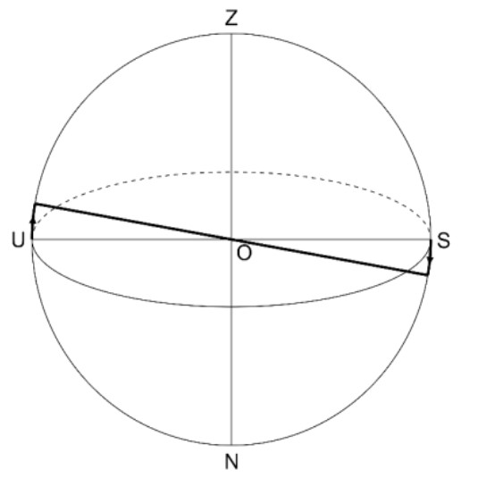
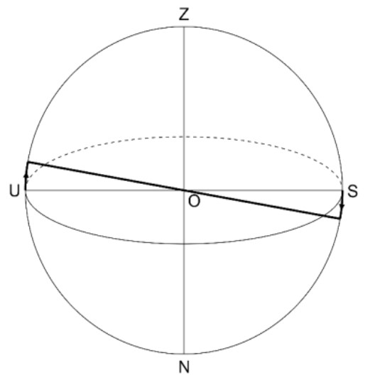
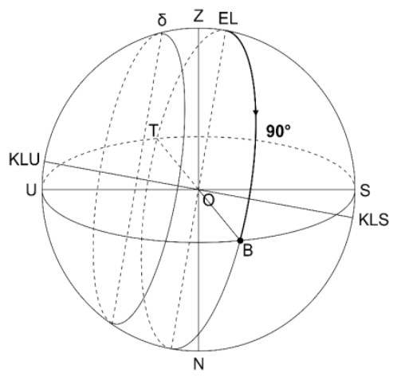
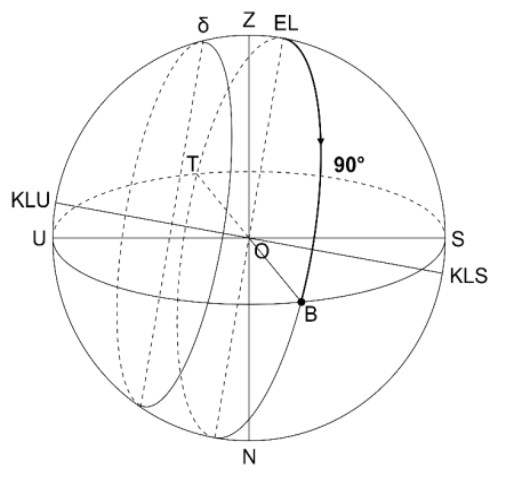

Modul Astrometri Asteroid - Akses Guru
Teori Dasar
Astrometri
Astrometri merupakan cabang ilmu astronomi yang mempelajari pengukuran posisi suatu objek langit dan pergerakannya di bidang langit (Endl, M., & Cochran, W.D., 2007). Astrometri merupakan salah satu teknik pertama yang digunakan untuk mengidentifikasi planet di sekitar bintang lain. Seperti pada metode tidak langsung lainnya, para astronom berusaha mendeteksi orbit bintang pusat terhadap barycenter (titik pusat massa) dari sistem bintang/planet. Orbit ini diukur sebagai perubahan posisi bintang di bidang langit, biasanya dibandingkan dengan sejumlah bintang latar belakang yang lebih jauh, yang digunakan untuk mendefinisikan kerangka referensi astrometri. Salah satu penerapan penting astrometri adalah dalam penentuan posisi asteroid, yang memiliki peranan besar dalam memahami dinamika tata surya, memperkirakan potensi tabrakan dengan Bumi, serta mendukung misi eksplorasi luar angkasa. Pengukuran posisi asteroid secara akurat memungkinkan untuk pemetaan orbit dan memprediksi pergerakannya di masa depan.
Asteroid
Asteroid adalah objek padat dengan diameter lebih dari 1 meter dan lebih kecil dari planet katai, yang bergerak di atau berasal dari ruang antarplanet, serta tidak menunjukkan aktivitas apa pun (misalnya pelepasan gas, debu, atau meteoroid) (Borovicka, J., 2016). Asteroid, yang kadang disebut planet kecil, adalah sisa-sisa berbatu tanpa atmosfer yang tertinggal dari pembentukan awal tata surya kita sekitar 4,6 miliar tahun yang lalu. Sebagian besar asteroid ditemukan mengorbit Matahari di antara planet Mars dan Jupiter dalam sabuk asteroid utama. Ukuran asteroid bervariasi, dari Vesta—yang terbesar dengan diameter sekitar 329 mil (530 kilometer)—hingga benda-benda yang berukuran kurang dari 33 kaki (10 meter). Total massa semua asteroid jika digabungkan masih lebih kecil dibandingkan massa Bulan Bumi (NASA, n.d.).
Sistem Koordinat Langit
Sistem koordinat benda langit merupakan sistem yang digunakan untuk menentukan posisi suatu benda langit seperti bintangm matahari, dan bulan di langit. Sistem koordinat benda langit merupakan sistem koordinat bola. Biasanya digunakan dua koordinat yang didefinisikan pada lingkaran besar acuan bola langit dan dinyatakan dalam sudut. Sistem koordinat benda langit hanya berfoks pada arah suatu benda di langit dan tidak memperhitungkan jarak benda langit tersebut. Ada beberapa sistem koordinat benda langut berdasarkan bidang acuan yang digunakan, yaitu sistem koordinat horizon, sistem koordinat ekuatorial, sistem koordinat ekliptika dan sistem koordinat galaksi.
Bola Langit
Bola langit merupakan bola khayal yang sangat besar dimana semua benda langit seperti bintang, bulan dan matahari menempel pada permukaan dalam kulit bola dan pengamat di bumi menjadi pusatnya. Penggunaan bola langit dapat memudahkan kita dalam memahami dan memprediksi pergerakan benda-benda langit baik harian maupun tahunan.
Sistem Koordinat Ekuatorial
Sistem koordinat ekuatorial merupakan sistem yang paling sering digunakan. Hal ini dikarenakan sistem koordinat ini memanfaatkan rotasi bumi dalam menentukan posisi benda langit. Sistem koordinat ini serupa dengan cara kita mendefinisikan posisi di permukaan bumi dan menggunakan orientasi bumi dalam ruang angkasa sebagai dasarnya. Bidang ekuator adalah bidang acuan yang cocok untuk sistem koordinat yang tidak bergantung pada waktu dan posisi pengamat. Sumbu rotasi bumi diperpanjang ke atas dan ke bawah hingga mencapai bola langit. Titik di mana sumbu bertemu dengan bola langit tepat di atas kutub utara disebut Kutub Langit Utara (KLU) dan di bawah kutub selatan disebut Kutub Langit Selatan (KLS). Bidang ekuator bumi juga diperluas hingga mencapai bola langit dan membentuk ekuator langit. Ekuator langit membelah bola langit menjadi belahan utara dan selatan.Penentuan Posisi Benda Langit pada Sistem Koordinat
Deklinasi-Hour Angle
Deklinasi merupakan sudut ketinggian benda langit yang diukur dari bidang ekuator langit ke arah kutub langit. Deklinasi memiliki rentang nilai antara -90° dan 90°. Deklinasi bernilai negatif jika berada di langit belahan selatan dan bernilai positif jika berada di belahan langit utara.
Hour Angle (HA) merupakan sudut antara meridian pengamat dan benda langit berada yang diukur sepanjang ekuator langit ke arah barat. HA biasanya dinyatakan dalam jam dan memiliki rentang nilai dari 0 jam hingga 24 jam. Sudut ini menyatakan waktu yang telah berlalu sejak benda langit transit dari atas pengamat. Benda langit yang memiliki HA sebesar 0 jam menandakan bahwa benda langit tersebut berada tepat di meridian atas atau sedang transit.
Deklinasi-Asensio Rekta
Koordinat yang digunakan untuk menentukan posisi benda langit yang mengacu pada titik Aries disebut asensio rekta. Asensio rekta diukur dari titik Aries ke arah timur atau berlawanan arah jarum jam. Asesnsio rekta biasanya disimbolkan dengan α atau RA (right ascencion) dan dinyatakan dalam jam. Rentang nilai asensio rekta antara 0 jam sampai 24 jam atau dinyatakan dalam derajat memiliki rentang nilai dari 0° hingga 360°. Deklinasi dan asensio rekta bintang tidak berubah sehingga dapat digunakan sebagai peta bintang dan katalog.
Deklinasi - Hour Angle
Simulasi penentuan posisi benda langit dengan deklinasi 23.5°, HA 6 jam, dan pengamat di 10° LU.
 

 

Deklinasi - Asensio Rekta
Simulasi penentuan posisi bintang dengan deklinasi -50°, RA 4 jam, diamati dari 30° LS.